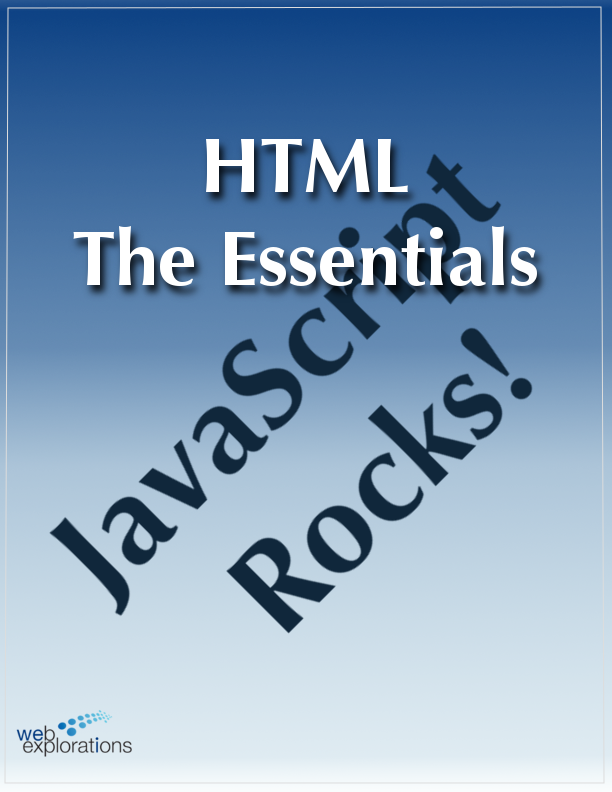
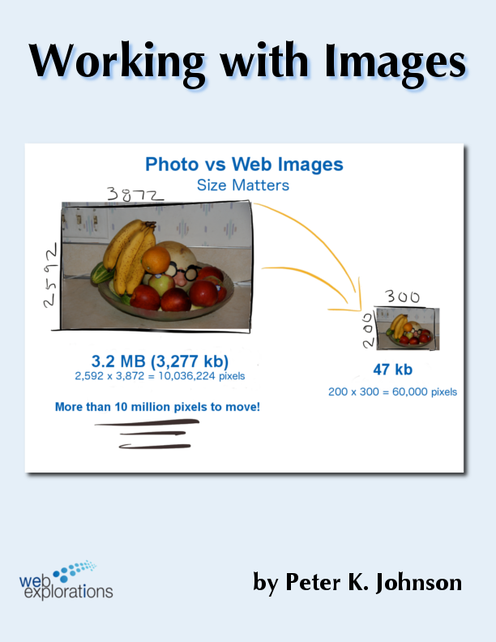
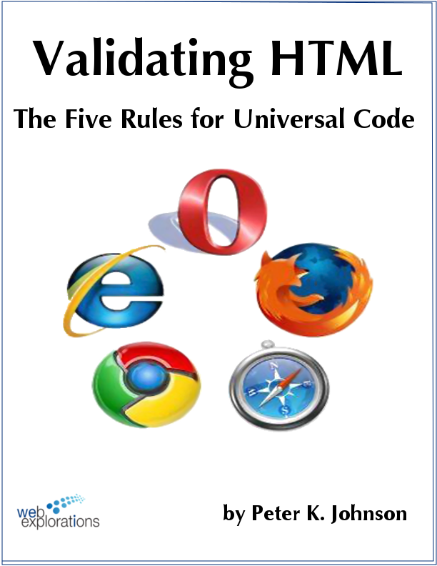
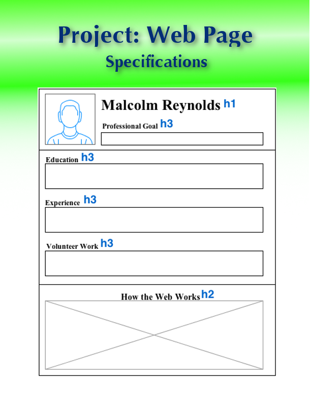

Essential HTML |
|
The Essential Elements to Build a Basic Web Page |

In this module you will learn:
- Create an HTML document using the essential HTML commands.
- Display the web page file using a browser.
- Incorporate effective commenting in a web page.
- Demonstrate the value of a header comment block.
- Create a useful skeleton (or HTML template) to speed web page development.
- Utilize at least three different heading tags in a web page <h1> <h2> <h3> etc.
- Establish a working system for developing HTML code working between the HTML code editing window and viewing the page (the browser).
WII-FM (What's In It - For Me)
I want to make a web page!
Complete these Learning Activities:
Total estimated time for doing these Learning Activities: 3 hours.
Take the Self-Quiz: essentialHTML. You can take the self-quizzes as many times as you like.
Be smart and take the self-quiz once each day to learn the material.
Estimated Time: 10 minutes (probably a lot less) each time you take a self-quiz.
Take the Self-Quiz: essentialHTML.
Read pages 25-47 in chapter 2 of Basics of Web Design HTML5 and CSS3 - HTML Basics.

- How to make headings and sub-headings
- What is a horizontal rule?
- Validating your work
- Protocols? What's that?
- What's a div?
Estimated Time: 1 hour
Read pages 25-47 in chapter 2 of Basics of Web Design HTML5 and CSS3 - HTML Basics.
Work through Tutorial:HTML
Pay attention to your frustrations with Ladle Rat Rotten Hut and jot down some notes for the next learning activity.
Resources:
ladleRat.txt (right mouse click, "save target as")
LadleRat.html
For your email, reports, and everything you write remember Ladle Rat Rotten Hut. Imagine someone getting an email from you as a glob of text. They might not even read it let alone respond to what you need. If you break up your text into paragraphs and use headings and bold text you will make your text much more readable and you'll get a better response on those emails (and probably a higher grade in your composition class.)
Here is a website showing all the Special Characters or Entities that browsers know and understand.
Alternatively, you can do a web search for: HTML "special characters" entities
Estimated Time: 30 minutes
Watch this video to learn three different ways to open a file..
Complete the Tutorial: HTML Essentials

- The secret character every browser looks for
- The Programming Cycle - Text Editor/Browser Buddies
- DOCTYPE and meta tags
- Writing notes to your future self.
- Validating your code
- Building a reusable template
- How the Web works
- Best practices
You'll also see how all three languages co-exist together: HTML, CSS, and JavaScript.
Estimated Time: 1 hour.
Complete the HTML Tutorial .

Complete the Tutorial: Working with Images to learn how to add images to your web pages.
You will learn about the different types of images as well as where to find images on the Web that you are free to use.
Estimated Time: 1 hour
Complete the Tutorial: Working with Images to learn how to add images to your web pages.
Watch this video to see how wire framing can help you visualize each web page before you start coding.
- What is a wireframe?
- Establishing a hierarchy (list of things by importance) of information
- Simplifying communication
- Building a blueprint
Estimated Time: 15 minutes
Watch this video to see how wire framing can help you visualize each web page before you start coding.
Want to resize your images? Watch this short video showing how to resize your images using GIMP. We will be studying GIMP a little closer in the weeks ahead. But for now, this will allow you to quickly resize your image making your web pages load faster.
You can also use other photo editing tools if you are more familiar with them.
Estimated Time: 30 minutes
Watch this short video showing how to resize your images using GIMP

Read through this short Tutorial: Validating HTML, The Five Rules for Universal Code to learn how to write code that will work in anyone's browser.
You will also find out a few nice software tools that will help you quickly check your code.
Estimated Time: 30 minutes
Read through this short Tutorial: Validating HTML, The Five Rules for Universal Code.
Be nice to your users! (and your instructor ;-) Every page should have a unique <title>. Here are some screen shots from two sites showing how confusing it is when the same title text is used for every page. (Click on the images for a larger view).
Estimated Time: 5 minutes
Be nice to your users! (and your instructor ;-) Every page should have a unique <title>.
Your Graded Assignments For This Module
Post your frustrations and conclusions to Ladle Rat Rotten Hut on the Discussion Board under the topic "Ladle Rat Rotten Hut" and participate in the discussion by responding to each other's comments.
- If you got frustrated as you read the plain text list as reasons why you think this happened.
- What could be done differently to make the plain text more user friendly?
- You can also include answers to the following:
- What is the purpose of HTML?
- Based on the purpose of HTML, what was your initial response to the plain text version of Ladle Rat Rotten Hut?
- How did this change when you viewed the HTML version of the story. What were some of the clues that made the HTML page easier to understand? How did the the hyperlinks help with your understanding of the page?
- How will this experience change how you write/present information in the future? (Not just web pages, but English papers, emails, and web postings!)
Note to the high achievers: Please don't answer all the questions in one posting, answer one and then ask your own question to encourage more discussion from others.
Note to low achievers: Okay, time to get with the program ;-) You are missing all the fun! Just reading everyone's comments is not the learning you want. You learn to swim by swimming, not by sitting on the beach watching everyone else having all the fun...)
Estimated Time: 30 minutes or less
Look on the Course Map for the due date for this graded activity.
Take the Graded Quiz: WebComm
- There will be 10 true/false and multiple choice questions.
- 10 questions - 10 minutes - 10 points
- Feel free to use your book or look stuff up on the Web or try things out on your computer.
- You will have one chance to take the quiz.
- The questions will be from the same database that the self-quiz uses.
- The quiz will be scored automatically and your points shown in your D2L grade book.
Estimated Time: 10 minutes
Look on the Course Map for the due date for this graded activity.
Complete the Project: Web Page

- Give yourself plenty of time for this project. You will be building on this work with future projects as you learn more about HTML and CSS.
- Do a little bit of work on the project every day as you work through the learning activities.
- Don't know how to do something? Look in the Learning Activities first.
Note: The cover on this project is showing a wire-frame or the idea stage of a web page. Your finished page will not look like this. The boxes are used to show where different objects will appear on the page. Think of it as a web page doodle.
Estimated Time: 2-4 hours
Look on the Course Map for the due date for this graded activity.

Your Tip-Of-The-Week
(Click on the lightbulb to reveal the tip.)
What's Changed Over the Last Decade?
Here is an interesting info-graphic showing what has changed over the last ten years.The Internet a Decade Later.
What's Next?
So, you have a web page. looks pretty boring. Let's make it look a little more interesting using CSS - Cascading Style Sheets are up next!